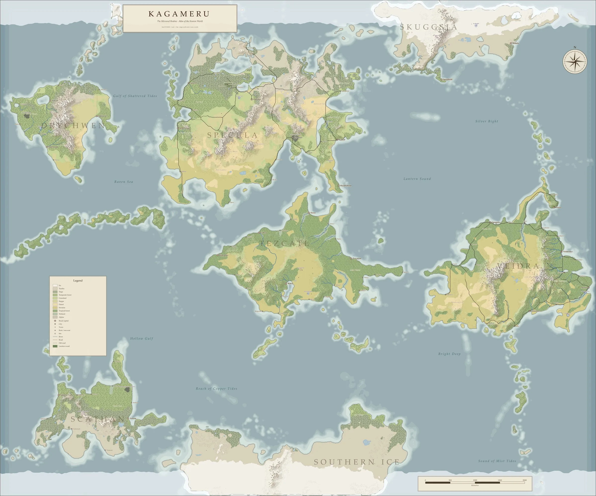
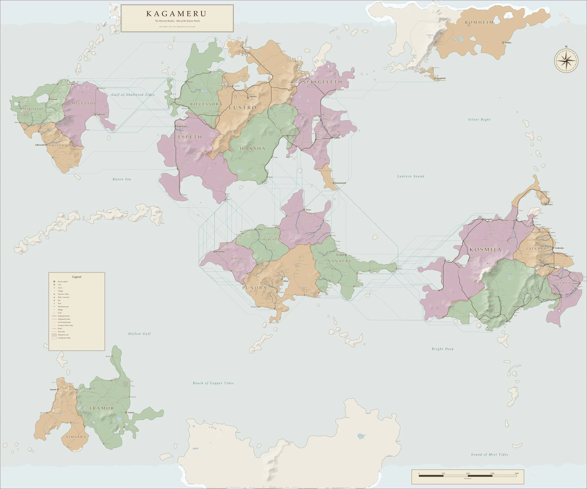

Standalone / 2 announced
10One-shots
Ten doors into cursed estates, forbidden archives, unstable scars, and mirrors that promise to open only once.
- The Dark Alley
- Mirror and Scars
Open source / 5.5e compatible
The Obsidian vault calls itself an archive. Follow its links long enough and it becomes a world: Kagameru, still bearing the wounds of an ancient divine war, where roads arrive in the wrong century, ruins remember histories that never happened, and mirrors open toward places no map can contain.
“A mirror is a door pretending to be furniture.”Professor Phineas Phantomhive II
Seven lands between the oceans: Specula, Drychwen, Scáthan, Veidra, Skuggsjá, Tezcatl, and the Southern Ice. Switch to the political map to see the realms and their borders.


Open full size ↗Every planned adventure belongs to the same setting. A single night beside the wrong mirror may end at dawn, or return much later as the first thread of a history the players have already changed.
Standalone / 2 announced
10Ten doors into cursed estates, forbidden archives, unstable scars, and mirrors that promise to open only once.
Multishots / 3 announced
5Five deeper trails where local conflicts expose recurring faces, dangerous relics, and consequences that refuse to remain where they began.
Long term / 1 announced
3Three long shadows over Kagameru, where crowns, divine wounds, and the Mirrorgate can reshape an entire table’s version of the world. The first is Shattered Hope, the setting’s main campaign.
Current production
Of the eighteen, only two are being written today. The other announced journeys have a public title and premise, but work on them has not begun; the remaining slots are reserved and still unnamed.
~1%Estimated progress
Current workDefining the campaign spine and its major arcs.
~25%Estimated progress
Current workPrelude and chapters 1–3 are drafted; now outlining the rest of the adventure.
Roadmap: The eighteen journeys describe the intended complete collection, not work already underway. Progress figures are editorial development estimates, not release dates, and lore, names, and the order of releases may still change as the setting is written and playtested.
The Mirrored Realms is more than a collection of adventures. It is an interconnected worldbuilding archive, where lore, characters, places, rules, and adventures lead into one another.
Kagameru, its cosmology, lands, and politics, and the histories and myths that still disagree about the Primordial War.
Species and cultures, faiths and deities, royal bloodlines, factions, and figures whose names appear more often than coincidence allows.
Homebrew on SRD 5.2.1: subclasses such as the Mirrorbound fighter and Scarborn Sorcery, Scar Hazards for the wounds of the Primordial War, and the creatures of the Mirrorgate Bestiary.
The Pact in the Twilight, its prelude and first three chapters drafted, and the Shattered Hope campaign are the first threads pulled from the dark.
The same records in reading order: the Encyclopedia Kagami, the Player’s Companion, the Game Master’s Codex, the Mirrorgate Bestiary, and one book for every adventure.
A music recommendation for every important place and character, some moods, some tracks from games like Celeste and Professor Layton. No music is included; self-made remixes are planned.
Ready for Atlas VTT, an optional virtual tabletop inside Obsidian: battle maps, tokens, fog of war, dice, initiative, and a player view.
Further character options, spells, relics, and other objects whose histories may be more dangerous than their powers.
The Mirrored Realms does not expect to be read from beginning to end. It expects curiosity. Open the repository as an Obsidian vault, find the welcome record, and follow whichever name first feels familiar.
Open source / Explore freely
Take what your table needs, change what the records got wrong, and follow the wiki-links until the vault begins answering questions you never asked.
git clone https://github.com/ShadowOkami4/Mirrorgate.gitGet the complete repository from GitHub.
Open the folder in Obsidian 1.8.7 or newer and trust its community plugins when asked.
Open 00 Library of Kagami/Welcome.md and meet the library’s custodian.
Follow the links in any order, or read the same records as books from the bookshelf in 04 Books.
Every archive needs a scriptorium. The Mirrored Realms is written and connected in Obsidian today; other tools wait for the stage of development when maps and play sessions will need them.
The vault is the work itself. Every record is written, linked, and organised in Obsidian: the primary editor, the knowledge base, and the place where Kagameru is built.
Visit Obsidian ↗A free, open-source Obsidian plugin by Fabian Urbanek (ByteMirror) that turns the vault into a virtual tabletop: battle maps, tokens, fog of war, dice, and initiative. Optional; every note works without it.
Atlas VTT on GitHub ↗The world map comes from the project’s own scripts: one seed, simulated terrain, erosion, and climate, then rivers, realms, settlements, and roads.
See the map ↑Planned for later map work. It belongs to a later stage of development and is not yet part of production.
Canvas of Kings on Steam ↗A planned 3D environment for building places of Kagameru as maps and bringing them to a virtual table. It is reserved for later-stage visualisation and play.
Visit TaleSpire ↗The Library of Kagami awaits
That may be the first thing inside it that tells the truth. Read the records, borrow what your table needs, and leave behind a version of the Mirrored Realms that did not exist before you entered.